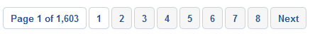

Server-side Development [JLW506]
07.forms
with Laravel
Named and grouped routes
- intermezzo -
Named routes
-
Specify a route name using the chained method
nameRoute::get('user/profile', function () { // })->name('profile'); -
The same with controller actions
Route::get('user/profile', 'UserController@showProfile')->name('profile');
Generating URLs To Named Routes
// Generating URLs…
$url = route('profile');
// … for routes with parameters
$url = route('profile', ['id' => 1]);
// Generating Redirects…
return redirect()->route('profile');Route groups
-
Specify a route (URI) prefix
Route::prefix('admin')->group(function () { Route::get('users', function () { // Matches the "/admin/users" URL }); Route::get('dashboard', function () { // Matches the "/admin/dashboard" URL }); }); -
Specify wildcard sub-domain for a route group
Route::domain('{account}.myapp.com')->group(function () { Route::get('user/{id}', function ($account, $id) { // }); });
Handling forms
General approach
-
Blog post routes example
// Display a form to create a blog post... Route::get('blogposts/create', 'PostController@create'); // Store a new blog post... Route::post('blogposts/create', 'PostController@store'); - The first route shows a Blade template containing a form
-
The second route
- validates the HTTP request
- stores the blog post
- redirects the user
About the other HTTP Verbs
-
Blog post routes example
// Display a form to create a blog post... Route::get('blogposts/create', 'PostController@create'); // Store a new blog post... Route::post('blogposts/create', 'PostController@store'); -
Don't use the other HTTP verbs (delete, put, patch)
- not (enough) compatible with HTML forms
- … unless you're faking the verbs with form method spoofing
- … unless you're building a RESTful web API
Cross-Site Request Forgery (CSRF)
- CSRF = A serious type of attack
A CSRF attack forces a logged-on victim’s browser to send a forged HTTP request, including the victim’s session cookie and any other automatically included authentication information, to a vulnerable web application. This allows the attacker to force the victim’s browser to generate requests the vulnerable application thinks are legitimate requests from the victim.
- FIX: Generate a CSRF token on each form load (and limit that token to that form only) and validate it too.
CSRF Protection
-
Include the automatically generated CSRF field/token in your (POST) form
// Vanilla PHP <?php echo csrf_field(); ?> // Blade Template Syntax … @csrf // … is the equivalent of: <input type="hidden" name="_token" value="{{ csrf_token() }}"> -
The
VerifyCsrfTokenmiddleware (part of thewebgroup) is already activated and does the checking - Read the Laravel docs on CSRF Protection on excluding CSRF protection and CSRF support for JS frameworks
Flash data in the session
-
By default the middleware
\Illuminate\Session\Middleware\StartSession
backs a permanent PHP session - Store and retrieve session variables with put, get, has, … (docs)
-
Flash a variable = store variable in the session only for the next HTTP request
$request->session()->flash('status', 'Task was successful!'); $request->session()->reflash(); // flash all data once again! $request->session()->keep(['username', 'email']); // the same for a selection of vars
A simple form v1 (1)
-
The Blade template
@include('common.errors') {{-- visualizes the $errors array --}} <form method="POST" action="{{ url('blogposts/create') }}" accept-charset="UTF-8"> @csrf <div class="form-group"> <label for="title">Title:</label> <input class="form-control" name="title" type="text" value="{{ old('title', '') }}" id="title"> </div> <div class="form-group"> <label for="content">Content:</label> <textarea class="form-control" rows="10" name="content" cols="50" id="content"> {{ old('content', '') }}</textarea> </div> <input class="btn btn-primary pull-right" type="submit" value="submit"> </form> - The helper method old retrieves an old input value flashed into the session
A simple form v1 (2)
-
The controller
public function create() { return view('blogpost.add'); } public function store(Request $request) { // building oldskool form errors … $errors = array(); if (!(($request->has('title')) && (strlen($request->title) > 0))) { $errors[] = 'The title field is required.'; } else if (strlen($request->title) > 125) { $errors[] = 'The title may not be greater than 125 characters.'; } else if (Blogpost::where('title', $request->title)->exists()) { $errors[] = 'The title has already been taken.'; } if (!(($request->has('content')) && (strlen($request->content) > 0))) { $errors[] = 'The content field is required.'; } …
A simple form v1 (3)
-
The controller
public function store(Request $request) { // building oldskool form errors … … if (count($errors) > 0) { // flash the form errors in the session $request->session()->flash('errors', $errors); // flash the request inputs in the session and take previous route $request->flash(); return back(); // NOTE: flashing the request inputs was necessary since the user is REDIRECTED // also possible: return back()->withInput(); } else { Blogpost::create($request->all()); // mass assignment return redirect('blogposts/success'); } }
Validation (1)
-
In our controller, the
validatemethod- takes the HTTP request and desired validation rules
- redirects the user back to his previous location upon failure (+ auto-flash of errors and input values)
public function store(Request $request) { $request->validate([ 'title' => 'required|unique:blogposts|max:125', 'content' => 'required', ]); // The blog post is valid, store in database... }
Validation (2)
-
Anticipating validation in your Blade templates
-
The
ShareErrorsFromSessionmiddleware (part of thewebgroup) assures an$errorsvariable is available in your views - Enjoy the richness of the rules available
'start_date' => 'required|date|after:tomorrow', 'finish_date' => 'required|date|after:start_date', 'photo' => 'image|mimes:jpeg,png', // is an image of any type and its content is jpeg or png 'avatar' => 'dimensions:min_width=100,min_height=200', // image with specified dimensions 'state' => 'exists:states,abbreviation', // exists in column abbreviation of table states 'email' => 'exists:staff,email,user_id,23' // exists in column email where user_id=23 // actually we have Authorization for the last rule example // for optional fields // since we have TrimStrings and ConvertEmptyStringsToNull middleware running 'publish_at' => 'nullable|date' -
The
Validation (3)
-
Read the Laravel docs on Validation on
- Stopping On First Validation Failure (bail)
- Validating arrays
- Form Request = classes containing the validation logic
- Working With (field related) Error Messages
- Customizing Error Messages
- Available Validation Rules
A simple form v2 (1)
-
The new version of the controller
public function create() { return view('blogpost.add'); } public function store(Request $request) { $request->validate([ 'title' => 'required|unique:blogposts|max:125', 'content' => 'required' ]); Blogpost::create($request->all()); return redirect('blogposts/success'); }
A simple form v2 (2)
-
Change
common/errors.blade.phpsuch that it visualizes an $errors collection@if ($errors->any()) <!-- Form Error List --> <div class="alert alert-danger"> <strong>Whoops! Something went wrong!</strong> <ul> @foreach ($errors->all() as $error) <li>{{ $error }}</li> @endforeach </ul> </div> @endif
Collective's Forms & HTML
-
In Laravel 4, it was possible to generate HTML form code using Laravel shorthands
- Forms & HTML (docs) has been removed from the core framework and is currently maintained by Laravel Collective
- You need to install it through Composer
- Releases ordered by Laravel version will be replaced by Laravel version agnostic releases
A simple form v3
-
The new version of the Blade template
@include('common.errors') {{-- visualizes the $errors collection --}} {!! Form::open(['url' => 'blogposts/create', 'method' => 'post']) !!} <div class="form-group"> {!! Form::label('title', 'Title:') !!} {!! Form::text('title', '', ['class' => 'form-control']) !!} </div> <div class="form-group"> {!! Form::label('content', 'Content:') !!} {!! Form::textarea('content', '', ['class' => 'form-control', 'rows' => '10']) !!} </div> {!! Form::submit('submit', ['class' => 'btn btn-primary pull-right']) !!} {!! Form::close() !!} - Advantage: csrf_field() and old() are generated for you !!!
File uploads
File Storage ≠ public folder
-
The public folder contains the assets (img, css, js, …)
- Assets directly accessible from the web server (link it with
asset()) - By default, you cannot handle (= store, edit, list, …) files there
- Assets directly accessible from the web server (link it with
-
File Storage is an abstraction layer which allows you to handle files on local and remote (cloud) systems in a uniform way
-
To be configured in
config/filesystems.php - By default,
publicdisk is selected, using thelocaldriver and stores these files instorage/app/public(not publicly accessible) -
Luckily, you can create a symbolic link from
public/storagetostorage/app/public☺$ php artisan storage:link The [public/storage] directory has been linked. -
Keep on using the
asset()helper:{{ asset('storage/file.txt') }}
-
To be configured in
File uploads
-
Checklist
- Create a symbolic link to
storage/app/publicor configure Filesystem - In your form (Views): check your
enctypeattribute (see this course) - Access the uploaded file through the HTTP request object (code example)
- Validation: check on file (MIME) type and eventually file size, dimension, …
-
Use a
*with multiple file uploads e.g.documents.* -
Check the type. Don't let *.php (and many others) pass!
Hint:
imageis a rule too
-
Use a
- Of course you need to store the file upload
- Most of the time, it's a good practice to rename the original file (think of duplicates and of a clean directory structure)
- If the path (relative to Filesystem root) does not exist, the folders are created
- Create a symbolic link to
Filtering

Filtering?
-
Allow a visitor to refine a set of results
- A form with checkboxes, dropdowns, etc. per defining property of the result set
- Typically placed on the left hand side, next to the results
- It is necessary to persist the form values (!)
-
Typically in combination with
- Pagination
- Sorting on specific properties of the result set (asc/desc)
Filtering scenarios
-
Filter via
GETparams- Pro: links can be shared/bookmarked
- Con: links become cluttered
- Con: filter not preserved after having navigated away
-
Filter via
Sessionparams- Pro: links don't become cluttered
- Pro: filter preserved after having navigated away
- Con: links can't be shared/bookmarked
Some Laravel filtering hints
-
In the controller
- Validate your input data e.g.
'brand_id' => 'exists:brands' Sessionscenario: add your inputs to the session- For each activated filter field, apply a chainable method e.g.
if (…) $products->where('brand_id', $request->brand_id);(or use when)- Pitfall: in SQL, AND has precedence over OR. This happens when you chain
where()andorWhere()serially. Use (or)where grouping instead.
- Pitfall: in SQL, AND has precedence over OR. This happens when you chain
- Pass your search results, existing categories and persisted values to the View e.g.
return view('webshop.search', ['products' => $products, 'brands' => $brands, 'brand_id' => $brand_id]);
- Validate your input data e.g.
-
In the Views
- Collective's Forms & HTML supports persistence for many types of form elements. Set the persisted value as the element's default:
Form::select('brand_id', $brands, $brand_id) GETscenario: append your params to your pagination URLs e.g.$products->appends(['brand_id' => $brand_id ])->links()
- Collective's Forms & HTML supports persistence for many types of form elements. Set the persisted value as the element's default:
Pagination

Pagination?
-
When having too many items to show, split them into several pages
- e.g. search results, filter results
- Paginator typically placed beneath the results
Examples
-
Bad examples:

 -
Good example:

- Always indicate how many results there are
- Always indicate how many pages there are
-
Show a reasonable number of pages
- The number row automgically adjusts itself based on the current page
- First two and last two pages always shown
- All, except the current page, clickable
-
Always indicate current active page
- Don't link it though!
-
Always show next/previous buttons
- Only clickable when necessary
- Don't show First/Last links (no direct value)
Manual approach: what we would need
- From database: Total number of items
- Number of items to show per page
- Parameter in url: current page (default = 1)
-
To calculate: number of pages
$numPages = ceil($numItems / $numItemsPerPage); - From database: a subset of items (ORDER BY, LIMIT)
- A pagination rendering strategy
Pagination in Laravel (1)
-
Use the
paginatemethod with Query Builder or Eloquent-
detects
?pagequery string argument on the HTTP request - gets the items from the DB through proper limit and offset
- returns a paginator object which is loopable like a result set
public function index() // controller method { $users = User::where('votes', '>', 100)->paginate(15); // uncomment next line to change the paginator's target URL // $users->setPath('custom/url'); return view('user.index', ['users' => $users]); } -
detects
- Don't use
simplePaginate: it will only generate prev/next buttons
Pagination in Laravel (2)
-
Simple (bootstrap compatible) display in Blade
<div class="container"> @foreach ($users as $user) {{ $user->name }} @endforeach </div> {{ $users->links() }} Or with appended GET parameters: {{ $users->appends(['sort' => 'votes'])->links() }} -
It's up to you to find a better strategy than rendering all the page links
- Use the pagination methods in separate pagination templates: howto
- Watch this clever algorithm
Advanced code generation hints
Resource controllers
-
Assign all your CRUD routes to a controller in a single line of code
- Generate the controller:
$ php artisan make:controller PhotoController --resource - Register the routes:
Route::resource('photos', 'PhotoController'); // available options: 'only', 'except' - Result:
Verb URI Action Route Name GET /photosindex photos.index GET /photos/createcreate photos.create POST /photosstore photos.store GET /photos/{photo}show photos.show GET /photos/{photo}/editedit photos.edit PUT/PATCH /photos/{photo}update photos.update DELETE /photos/{photo}destroy photos.destroy - In a web app, you will need to spoof the methods DELETE, PUT and PATCH
- Generate the controller:
Collective's Form Model Binding
-
Populate an HTML form based on the contents of a model
- Start the form by
{!! Form::model($user, ['route' => ['user.update', $user->id]]) !!} - Flash data has precedence over the contents !
- Don't forget to
Form::close
- Start the form by